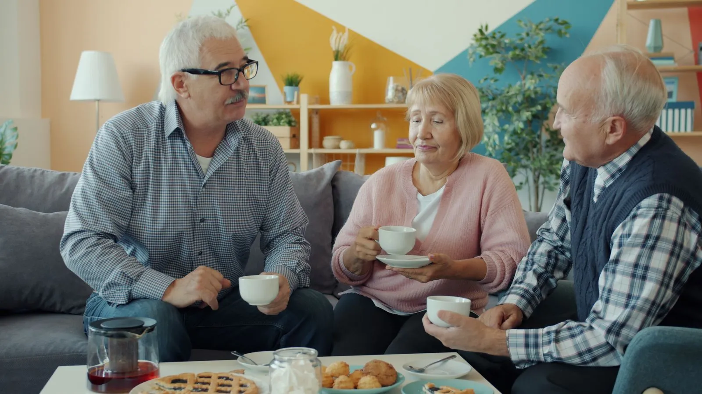

Doors 9:40Service 10:00–11:15Tea until noon48 Calder St
Dear neighbour,
If you have walked past our door a few times, this page is for
you. We are about a hundred people in a brick hall on Calder
Street, and most of us came in the first time not knowing when to
stand.
So here is the morning in order. What happens next is up to you.
See you Sunday?
Daniela Reyes, pastor
What happens, and what to do
Doors
9:40
Come in any door; someone at the back will say hello.
Welcome and three songs
10:00
All stand for the songs. Sing, hum or listen; the words are on
the screen.
Chairs, not pews. Any one will do.
The children go down
10:15
The children go down to their rooms. Walk yours down if you
like.
Downstairs, in the children's rooms.
Reading and talk
10:25
All sit. About twenty minutes, in plain words. Nobody is
called on.
Offering and prayers
10:50
Guests are not expected to give. Pass the basket on.
Bread and cup
11:00
First Sunday of the month. The bread and cup are passed
along the rows. If you're not sure, pass the plate on.
Nobody minds.
Last song
11:05
The children come back up. Leave whenever you need to.
Tea in the hall
11:15
Stay ten minutes or an hour; the urn is on until noon.
Notices
Read at the back; nobody will quiz you.
The long table downstairs.
Kids
Ages 3 to 11 go down at 10:15 and come back at 11:05.
Under-threes stay with you, in the parents' room at the back if
you like: a window onto the service, the sound on.
Every volunteer has a police vulnerable-sector check. Priya Nair
runs the rooms; ask her anything at the door.
You can walk them down and see it first.
Wednesday, about 4:15.
Pantry
Wednesdays, 4:00 to 6:30 pm, at the hall door off Mercer Lane.
About 58 households come by each week; that was 2,900 bags of
groceries last year.
Tom Okafor and his crew stock it. Closed two weeks at Christmas.
No forms. No ID. Bring a bag if you have one.

Soup first, then questions.
Thursdays
Soup at 6:30 pm, then a talk and questions from 7:15 to 8:30, in
a home near Mercer Lane. Tell us you're coming and we'll send
the address.
About a dozen people. Questions are the point.
Come once. Nobody signs a list.
Finding the door
48 Calder Street, Hamilton, Ontario
L8L 4X2. The red brick hall
with the arched door, here since 1952.